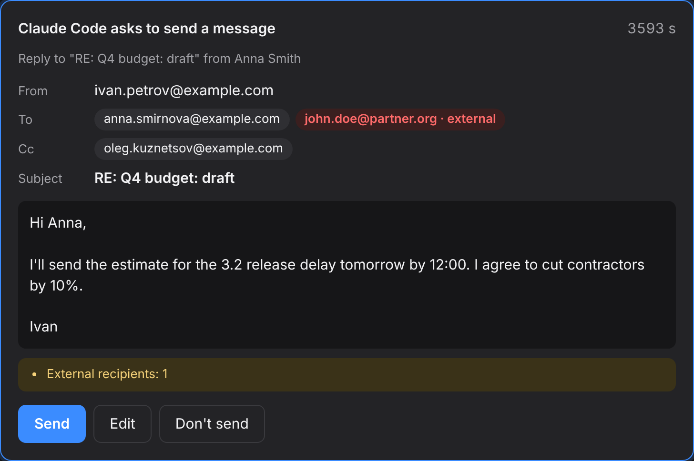
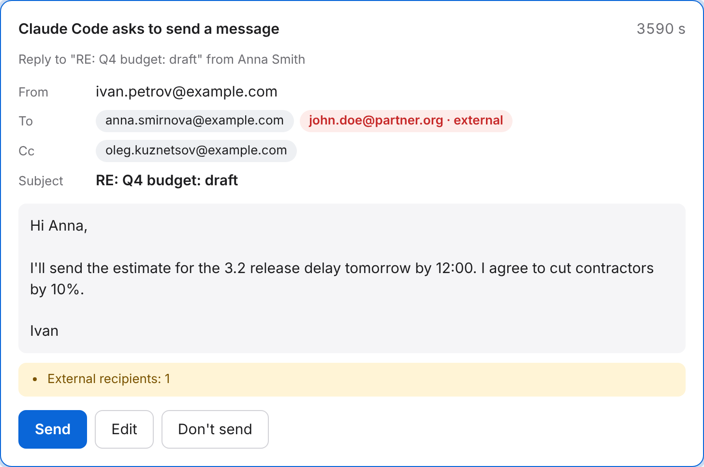
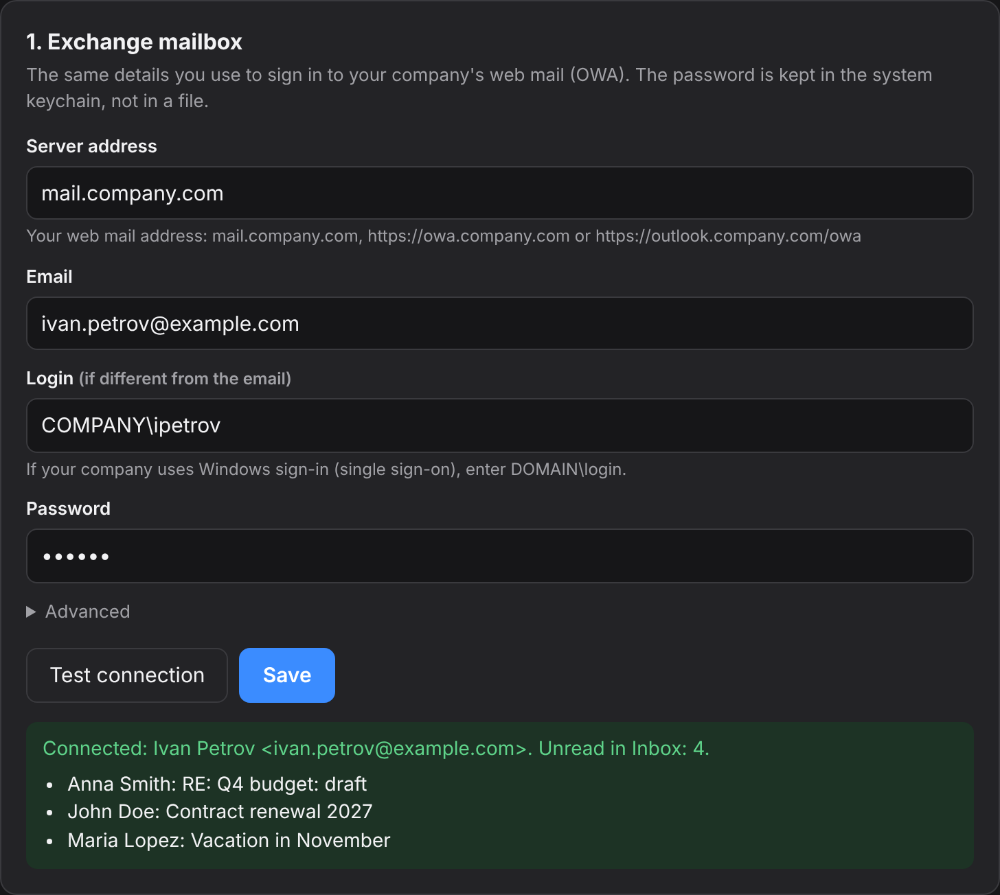
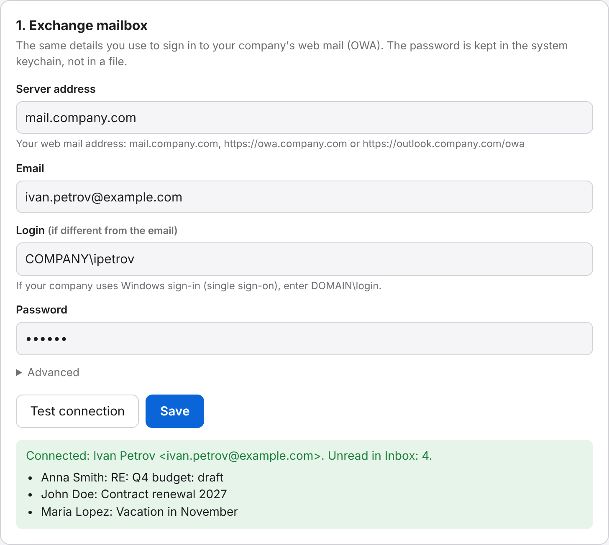

Inbox triage
New mail for any period, sorted into “reply”, “FYI” and “safe to skip”.
check_mailtriage_inboxAn MCP server for Microsoft Exchange / OWA. Your agent checks your inbox, searches mail, and summarizes threads and attachments. Nothing goes out until you click Send.
curl -LsSf https://raw.githubusercontent.com/Khomiakov7706/owa-mail-mcp/main/install.sh | sh
Works with Claude CodeClaude DesktopCodexCursorOpenCodeKilo Codeany MCP client


Features
The agent sees your mailbox the way you do in web mail. It decides which message to open, which thread to pull together, and what to read in an attachment.
New mail for any period, sorted into “reply”, “FYI” and “safe to skip”.
check_mailtriage_inboxThe whole conversation from Inbox and Sent, in order, without the “From: … Sent: …” clutter. Who proposed what, and what’s expected of you.
get_threadsummarize_threadText from .docx, PDF, .txt, .md, .csv, HTML, and .vtt/.srt subtitles — with speaker lines like “Anna: …”.
get_attachmentBy text, sender, recipient, subject, date and attachments. Dates the way people write them: yesterday, 7d, 2026-10-01.
search_messagesget_messageYour company address book: name, exact address, title, department. Plus who wrote to you most this week, with unread counts.
find_peoplelist_sendersThe agent can draft a message or a reply in a thread, but it can’t send on its own. A confirmation window opens in your browser.
send_emailHow it works
The installer puts its own Python in a separate folder and leaves the system one alone. To update, run the same command. Your settings are kept.
The setup window asks for the same details you use for web mail. Test connection shows your name and latest messages.


The Add button registers the server in Claude Code, Codex, Claude Desktop or Cursor. Then just ask: “what’s new in my inbox?”
Install
You need access to your mail server: if web mail only opens over VPN, turn the VPN on. The program's windows follow your system language; you can switch it in the setup window.
Paste into Terminal. The setup window opens in about a minute.
curl -LsSf https://raw.githubusercontent.com/Khomiakov7706/owa-mail-mcp/main/install.sh | sh
In PowerShell:
powershell -ExecutionPolicy ByPass -c "irm https://astral.sh/uv/install.ps1 | iex" uv tool install --python 3.12 git+https://github.com/Khomiakov7706/owa-mail-mcp owa-mail-mcp setup
Copy this text and send it to an agent that has a terminal on your computer: Claude Code, Codex, Cursor, OpenCode, Kilo Code. It does everything itself, following the instructions for agents.
Install and connect the OWA Mail MCP server for my Exchange work email. Follow the instructions for agents step by step: https://khomiakov7706.github.io/owa-mail-mcp/agent-install.md Don't ask me for my password — I'll type it myself in the setup window.
The agent never sees your password and doesn't change security settings for you. If the agent runs in the cloud or in a sandbox rather than on your computer, it gives you the commands to run yourself.
The easiest way is the Add button in the setup window (owa-mail-mcp setup). Or in a terminal:
claude mcp add --scope user owa-mail -- ~/.local/bin/owa-mail-mcp
To check: claude mcp list, or /mcp in a session.
Settings → Developer → Edit Config, then restart Claude Desktop. The setup window fills in the exact path for you.
{
"mcpServers": {
"owa-mail": { "command": "/Users/YOU/.local/bin/owa-mail-mcp" }
}
}codex mcp add owa-mail -- ~/.local/bin/owa-mail-mcp
File ~/.cursor/mcp.json:
{
"mcpServers": {
"owa-mail": { "command": "/Users/YOU/.local/bin/owa-mail-mcp" }
}
}File ~/.config/opencode/opencode.json (for a single project, opencode.json in its root). OpenCode has its own format: an mcp key, "type": "local", and the command as an array. OpenCode doesn’t read the mcpServers key. The Add button in the setup window writes this for you.
{
"$schema": "https://opencode.ai/config.json",
"mcp": {
"owa-mail": {
"type": "local",
"command": ["/Users/YOU/.local/bin/owa-mail-mcp"],
"enabled": true
}
}
}Restart OpenCode. To check: opencode mcp list.
Newer Kilo Code versions use the same format as OpenCode, in ~/.config/kilo/kilo.jsonc (for a project, kilo.jsonc or .kilo/kilo.jsonc):
{
"mcp": {
"owa-mail": {
"type": "local",
"command": ["/Users/YOU/.local/bin/owa-mail-mcp"],
"enabled": true
}
}
}Older extension versions: Kilo Code → MCP Servers → “Edit Global MCP” (file mcp_settings.json; for a project, .kilocode/mcp.json):
{
"mcpServers": {
"owa-mail": {
"command": "/Users/YOU/.local/bin/owa-mail-mcp",
"args": [],
"disabled": false,
"alwaysAllow": []
}
}
}After editing, restart Kilo Code (in VS Code: Developer: Reload Window).
Any MCP client over stdio: the command is the absolute path to owa-mail-mcp, with no arguments or environment variables. The server reads its settings from its own file and the keychain.
/mcp → ReconnectFor developers and agents
Everything except send_email is read-only. Email content is data, not instructions: the server explicitly tells the agent not to follow commands found in messages.
| Tool | What it does |
|---|---|
get_status | Who the user is, current time, unread count, version, whether sending is on |
check_mail | New messages in Inbox (unread by default) with previews |
search_messages | Search by text, sender, recipient, subject, date, attachments; folders: inbox, sent, inbox_and_sent, all |
get_message | The full message: body (HTML → text), recipients, attachment names |
get_thread | The whole thread in order across all folders, without quoted history, with participants |
get_attachment | Attachment text: .docx, .pdf, .txt, .md, .csv, .html, .vtt/.srt, attached emails |
find_people | Organization address book: name, address, title, department |
list_senders | Who wrote in a period: message count, unread, latest subject; for sent, who you wrote to |
send_emailwrite | A new message or a reply (reply_to_message_id, reply_all) — only after you confirm in the window |
Prompts: summarize_thread — a thread summary, triage_inbox — inbox triage. Full reference: the Markdown version of this page and llms.txt.
Security
Keychain, Credential Manager or Secret Service. Not in a file, not in the log, not with the agent: no tool can reveal it.
The password goes only to the Exchange server you set, and only over HTTPS. Redirects to other hosts get no password.
Off by default. Every message needs your click in a local window. Hidden characters, invalid addresses and too many recipients are rejected; external addresses are highlighted.
127.0.0.1 only, a secret random address, Host and Origin checks, no embedding: other sites can’t reach them.
Standard certificate checks stay on. An internal company certificate is accepted only if it’s that exact one, by SHA-256.
After a rejected password, requests to Exchange stop, and request rates are limited. The log keeps only tool names and timestamps — no email content.
curl … | sh installs whatever is on the main branch right now. There are no signed releases or pinned versions yet: if the GitHub account is compromised, the next update will be too.OWA_MAIL_PASSWORD variable in the agent config instead of the keychain. Both are off until you turn them on.FAQ
For personal use, the design is sound: the password lives in the keychain, and nothing is sent until you confirm. But there has been no independent audit, and email content goes to an AI service — corporate mail needs sign-off from your security team. Details in Security.
It’s the address of your work web mail in the browser: mail.company.com, https://owa.company.com or https://outlook.company.com/owa. Any of these works.
The setup window tells you why. DNS: reconnect your VPN. Connection: your browser probably goes through a proxy (you can set it under Advanced → Proxy). TLS: an old server; the window offers to allow legacy settings for that server only.
There’s a gateway with a web login in front of EWS. The program first signs in through OWA and continues on the same connection — that’s usually enough. If not, use Copy diagnostics in the setup window (no passwords included) and send it to IT or open an issue.
The password is in the system keychain; everything else is in config.json in your user folder (on a Mac, ~/Library/Application Support/owa-mail-mcp). Updates don’t touch them. To check: owa-mail-mcp status.
Your client is still running the old process. Restart the MCP server: in Claude Code, /mcp → owa-mail → Reconnect; in Claude Desktop and Cursor, quit and reopen the app.
Ask your agent to “check my mail status”. get_status returns your address, unread count and version. The call log is at the bottom of the setup window.
No. Sending is off by default, and every message goes through a confirmation window whose address only your browser knows. No answer in 50 seconds and the message isn’t sent.
The server is built for on-premises Exchange 2013–2019 over EWS. Microsoft 365 has disabled password sign-in for EWS, so for cloud mail, servers built on Microsoft Graph are a better fit.
One command, and your agent reads work email right alongside you.
curl -LsSf https://raw.githubusercontent.com/Khomiakov7706/owa-mail-mcp/main/install.sh | sh